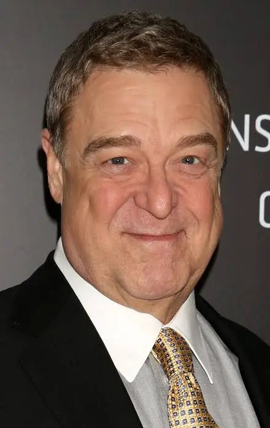
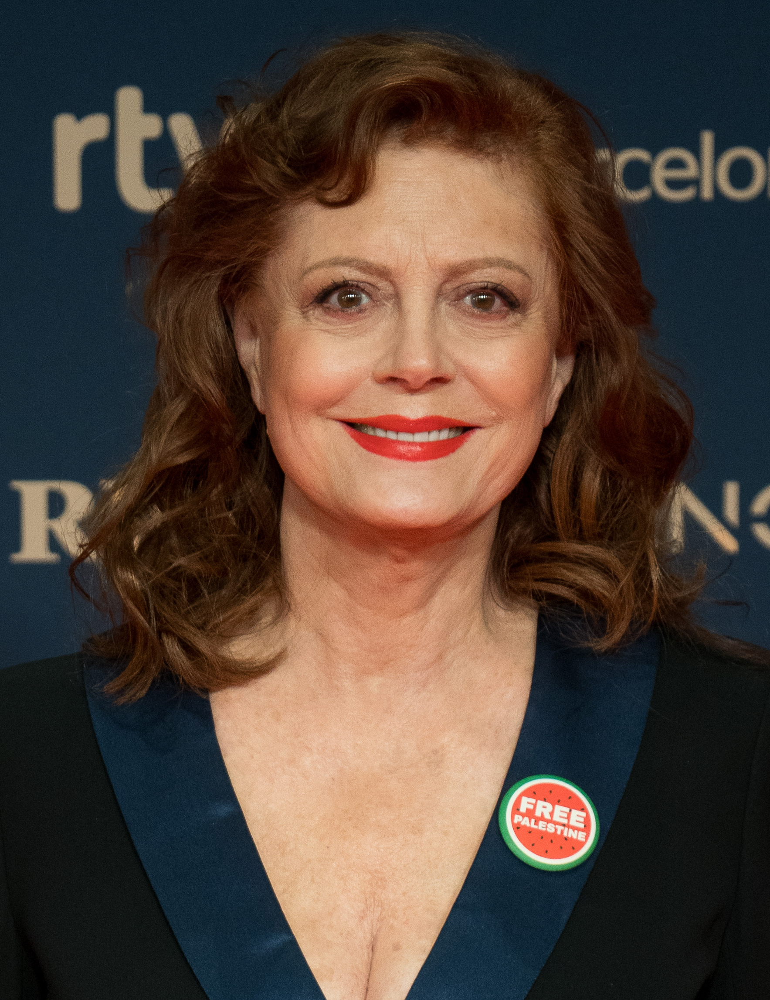
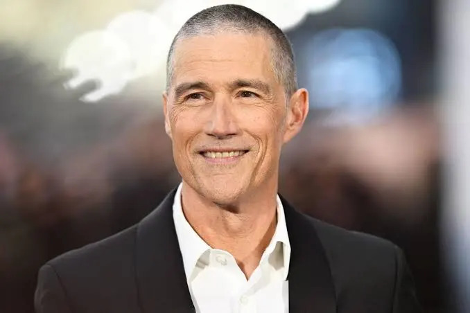
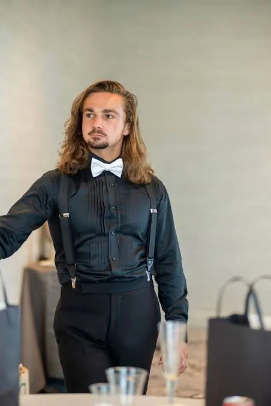
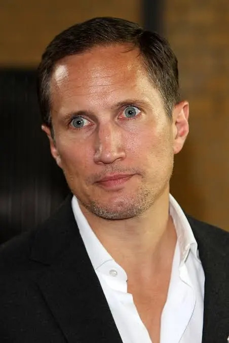

Reparto
Principales y Personajes
Hirsch — Meteoro (Speed Racer)
Es el protagonista. Un joven y talentoso piloto de carreras que busca demostrar su capacidad y mantener el legado de su familia. Su principal objetivo es competir al más alto nivel sin dejar de lado los valores de su familia.
Christina Ricci — Trixie
Es la novia de Meteoro y una de las personas que más lo apoya. Es decidida, inteligente y participa activamente en las aventuras y carreras de Meteoro.
John Goodman — Pops Racer
Es el padre de Meteoro y dueño del taller familiar. Es un antiguo corredor y representa la tradición y los valores de la familia Racer. Su relación con Meteoro es fundamental para la historia.

Susan Sarandon — Mom Racer
Es la madre de Meteoro. Apoya a su familia y ayuda a mantener unida a la familia Racer. También participa en la preparación y las decisiones relacionadas con las carreras.

Matthew Fox — Corredor X
Es un misterioso y experimentado piloto que utiliza una identidad secreta. Se convierte en una figura importante para Meteoro y lo ayuda a comprender mejor el mundo de las carreras.

Roger Allam — Royalton
Es el principal antagonista de la película. Es un poderoso empresario relacionado con las carreras. Intenta convencer a Meteoro de que se una a su organización y utiliza su influencia para controlar el mundo de las competencias.
Paulie Litt — Spritle Racer
Es el hermano menor de Meteoro. Acompañado por su chimpancé Chim-Chim, aporta humor y también termina involucrándose en las aventuras de su hermano.

Benno Fürmann — Inspector Detector
Es un agente que trabaja para la organización de Royalton y participa en los conflictos relacionados con Meteoro y las carreras.
